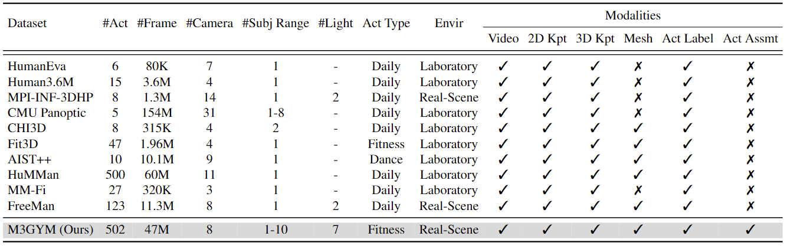
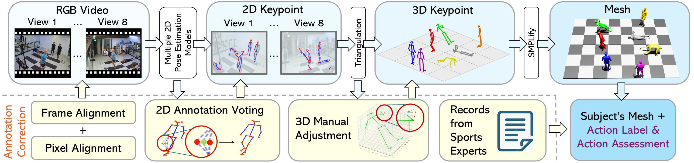
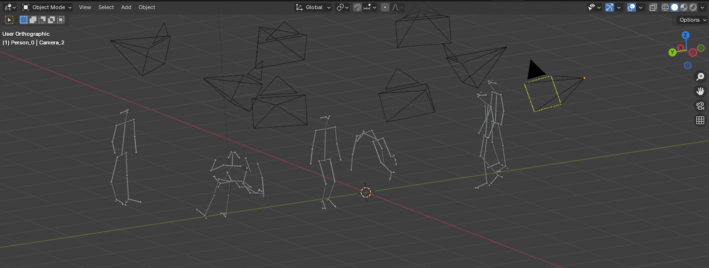
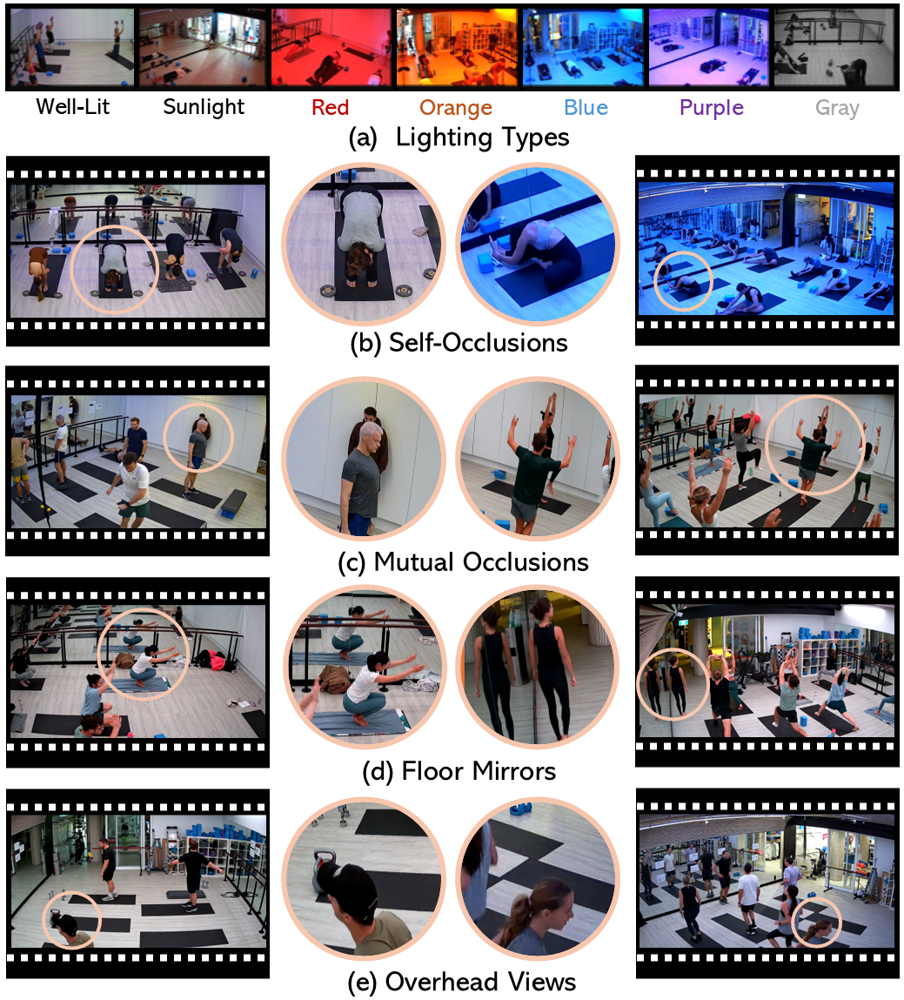
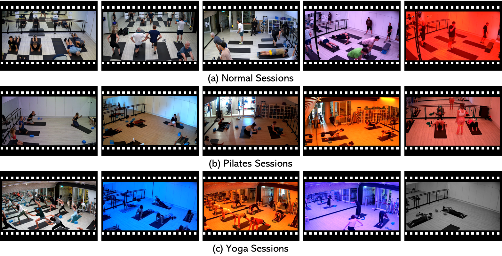
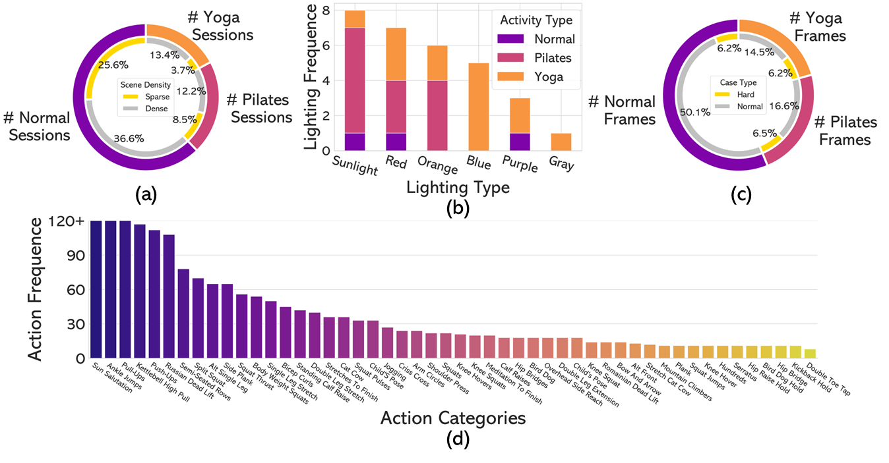

Human pose estimation is a critical task in computer vision for applications in sports analysis, healthcare monitoring, and human-computer interaction. However, existing human pose datasets are collected either from custom-configured laboratories with complex devices or they only include data on single individuals, and both types typically capture daily activities.
In this paper, we introduce the M3GYM dataset, a large-scale multimodal, multi-view, and multi-person pose dataset collected from a real gym to address the limitations of existing datasets. Specifically, we collect videos for 82 sessions from the gym, each session lasting between 40 to 60 minutes. These videos are gathered by 8 cameras, including over 50 subjects and 47 million frames. These sessions include 51 Normal fitness exercise sessions as well as 17 Pilates and 14 Yoga sessions. The exercises cover a wide range of poses and typical fitness activities, particularly in Yoga and Pilates, featuring poses with stretches, bends, and twists, e.g., humble warrior, fire hydrants and knee hover side twists. Each session involves multiple subjects, leading to significant self-occlusion and mutual occlusion in single views. Moreover, the gym has two symmetric floor mirrors, a feature not seen in previous datasets, and seven lighting conditions. We provide frame-level multimodal annotations, including 2D&3D keypoints, subject IDs, and meshes. Additionally, M3GYM uniquely offers labels for over 500 actions along with corresponding assessments from sports experts. We benchmark a variety of state-of-the-art methods for several tasks, i.e., 2D human pose estimation, single-view and multi-view 3D human pose estimation, and human mesh recovery. To simulate real-world applications, we also conduct cross-domain experiments across Normal, Yoga, and Pilates sessions. The results show that M3GYM significantly improves model generalization in complex real-world settings.M3GYM offers a unique multi-view human pose dataset, focusing on diverse fitness activities in multi-person scenes with complex occlusions in real-world settings.

To ensure high-quality annotations, our semi-automated pipeline integrates 2D annotation voting and 3D manual adjustment, followed by manual verification to provide accurate ground truth data.

The 3D annotation interface is built using Blender to facilitate intuitive 3D keypoint adjustment.

The M3GYM dataset captures diverse challenges including complex occlusions, realistic gym environments.

Samples showing (a) varied lighting, (b) self-occlusions, (c) mutual occlusions, (d) mirrored gym setups, and (e) unique overhead views.

Samples across three session types: Normal, Pilates, and Yoga.
M3GYM is curated with a focus on diversity and difficulty. The statistics below highlight the session densities, lighting diversity, hard-case frequencies, and most common action types.

(a) Dense vs. sparse session distribution. (b) Lighting diversity (excluding well-lit). (c) Frequency of hard-case frames. (d) Top 50 action types.
All participants involved in the M3GYM data collection process were fully informed of the study's purpose and procedures. Before any recording, each individual reviewed detailed information and voluntarily signed a consent form.
As the dataset contains both body and facial information, we take privacy seriously. No personally identifiable details (e.g., names, ages, occupations) are collected or released. Facial features are anonymized to prevent identification.
The dataset is released for non-commercial academic research only. To access it, please complete the Data Access Protocol Form. A download link will be provided via email upon approval.
@inproceedings{xu2025m3gym,
title = {M3GYM: A Large-Scale Multimodal Multi-view Multi-person Pose Dataset for Fitness Activity Understanding in Real-world Settings},
author = {Xu, Qingzheng and Cao, Ru and Shen, Xin and Du, Heming and Wang, Sen and Yu, Xin},
booktitle = {Proceedings of the Computer Vision and Pattern Recognition Conference},
pages = {12289--12300},
year = {2025}
}